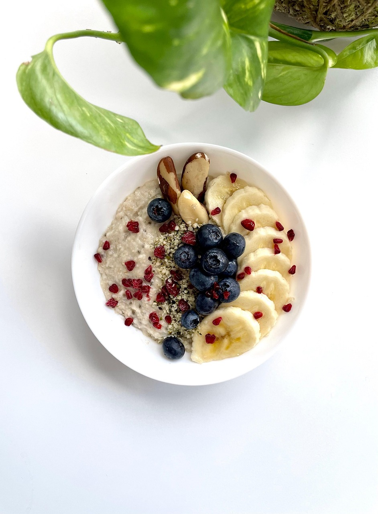

Home
Oatmeal

Description
A healthy bowl of oatmeal loaded with protein and other micronutrients
Ingredients
- 1 Cup Quick Oats
- 1/4 Cup Raisins
- 1 Cup Blueberries
- 1 Sliced Whole Banana
- 1 Scoop Protien Powder
- 1 Tsp Cinnamon
- 1 Cup Milk
Steps
-
Mix the oats, raisins, blueberries, protein power, cinnamon, and milk to
a bowl.
- Microwave the bowl for 3 minutes.
- Add the banana.